Hướng dẫn cách xóa trang Fanpage trên Facebook ngay lập tức

Ty Nguyen
CEO ❤️ AhaChat. Love babies & chatbot.
Trang Fanpage Facebook là kênh để các cá nhân hay doanh nghiệp có thể quảng bá thương hiệu, sản phẩm, kinh doanh online hay chỉ đơn giản là thu hút lượng truy cập, cùng bàn luận và cập nhật thêm các thông tin. Tuy nhiên, sẽ có lúc bạn muốn xóa những trang Fanpage đã tạo bởi một số lý do khác nhau. Vậy để xóa trang Fanpage trên Facebook thì làm thế nào? Bài viết dưới đây hướng dẫn cách xóa trang Fanpage trên Facebook ngay lập tức, giúp bạn giải đáp thắc mắc trên, đừng bỏ lỡ nhé!
1. Cách xóa trang Fanpage Facebook trên máy tính
Việc xóa trang Fanpage Facebook trên máy tính rất đơn giản, bạn chỉ cần thực hiện theo các bước hướng dẫn dưới đây là có thể xóa được ngay lập tức trang Fanpage mà bạn muốn xoá.
Bước 1: Đầu tiên, bạn cần phải đăng nhập vào tài khoản Facebook cá nhân chứa Fanpage mà bạn muốn xoá.
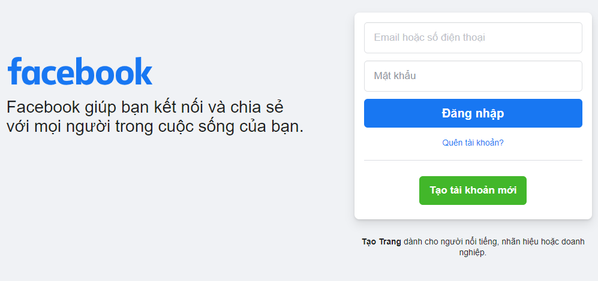
Bước 2: Tại giao diện trang chủ của Facebook cá nhân sau khi bạn đăng nhập, bạn click chuột vào mục Trang ở menu phía tay trái.
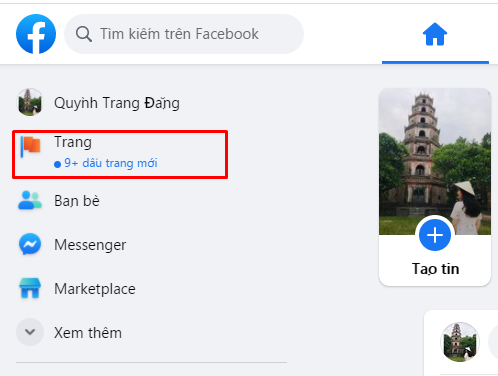
Bước 3: Lúc này, xuất hiện toàn bộ danh sách trang Facebook bạn đang quản lý, bạn click chuột vào Fanpage bạn muốn xoá. Để xoá được trang Fanpage Facebook, yêu cầu bạn phải là admin của Fanpage đó thì mới được quyền xóa Fanpage.
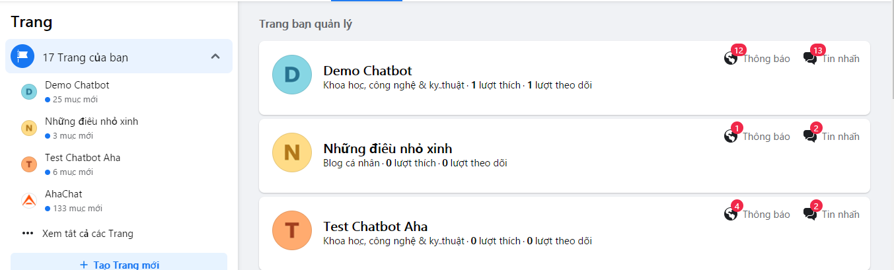
Bước 4: Khi đã chọn được Fanpage mà bạn muốn xoá, tại giao diện trang chủ của Fanpage đó, bạn chọn mục Cài đặt trang ở góc cuối bên trái màn hình.
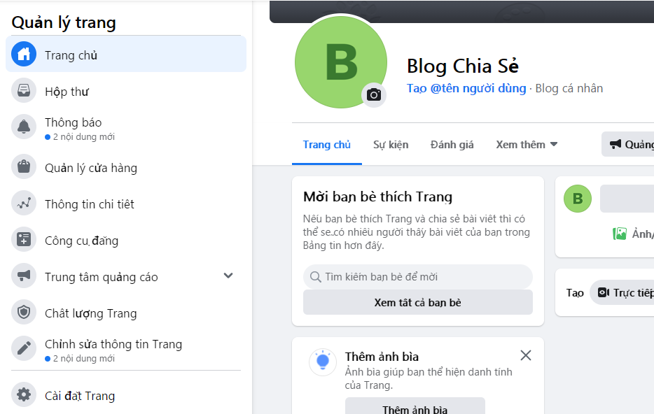
Bước 5: Giao diện Cài đặt Trang xuất hiện, bạn nhìn vào phía bên phải, kéo xuống dưới tìm tới mục Gỡ trang, bạn click chuột vào nút Chỉnh sửa.
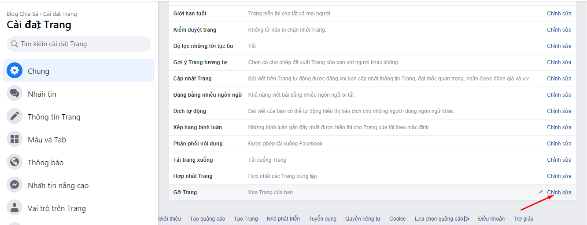
Bước 6: Sau khi bạn ấn vào Chỉnh sửa, tiếp theo đó bạn ấn vào Xóa vĩnh viễn [Tên Fanpage của bạn muốn xoá]
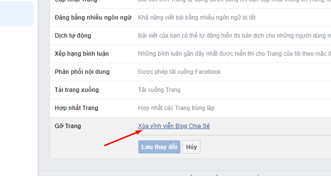
Bước 7: Lúc này, xuất hiện thông báo từ Facebook hỏi bạn có muốn Xóa trang vĩnh viễn hay không? Nếu bạn vẫn muốn tiếp tục xoá, bạn ấn vào Xóa.
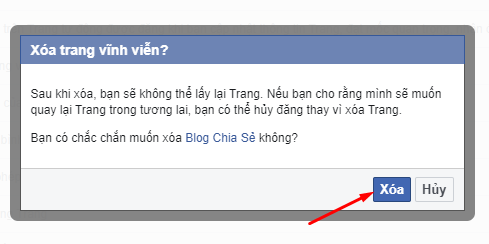
Bước 8: Kết quả, trang Fanpage bạn muốn xoá đã được xóa vĩnh viễn, bạn bấm vào Ok.
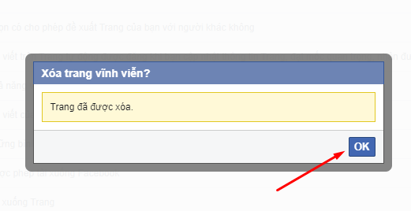
Như vậy chỉ với vài thao tác cơ bản, bạn đã có thể xóa trang Fanpage Facebook trên máy tính thành công rồi nhé.
2. Cách xóa trang Fanpage Facebook trên điện thoại
Để xoá được trang Fanpage Facebook trên điện thoại, trước hết bạn cần phải đăng nhập vào tài khoản Facebook cá nhân tại ứng dụng Facebook trên điện thoại. Và yêu cầu tài khoản Facebook cá nhân đó là quản trị viên của Fanpage Facebook mà bạn muốn xoá. Sau đó bạn thực hiện theo các bước hướng dẫn sau:
Bước 1: Tại giao diện trang chủ sau khi đăng nhập vào tài khoản Facebook cá nhân chứa trang Facebook bạn muốn đổi tên, bạn bấm chọn biểu tượng 3 gạch ngang ở góc phải phía dưới màn hình và chọn mục Trang của bạn.
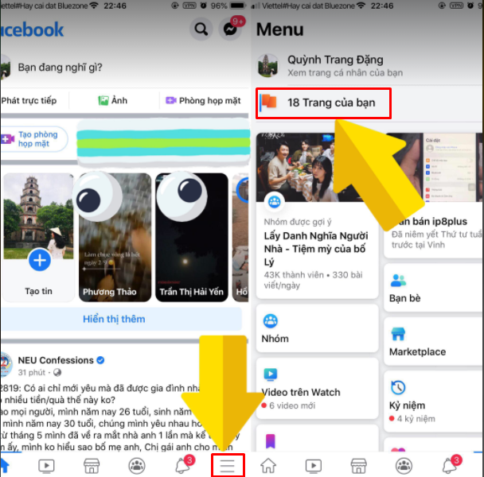
Bước 2: Sau khi bấm vào mục Trang của bạn, tại đây sẽ xuất hiện giao diện tất cả các trang facebook hiện bạn đang quản lý, bạn bấm chọn vào trang Facebook mà bạn muốn xoá.
Bước 3: Tại giao diện trang chủ của Fanpage Facebook mà bạn muốn xoá, bấm vào hình bánh răng cưa ở góc trái màn hình điện thoại, sau đó bạn chọn mục Cài đặt chung ở giao diện Cài đặt.
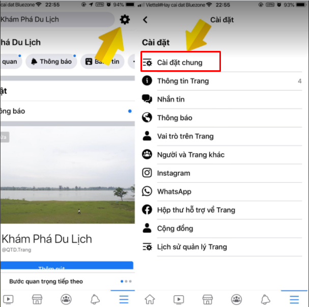
Bước 4: Tại giao diện Cài đặt chung, bạn kéo xuống dưới tìm mục Gỡ trang và bấm vào dòng Xóa vĩnh viễn [tên fanpage bạn xóa]
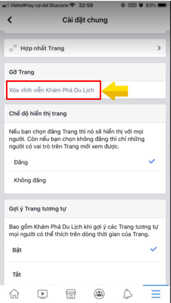
Bước 5: Lúc này giao diện mục Gỡ trang xuất hiện, tại bước này nếu bạn đổi ý không muốn xóa trang Fanpage của bạn nữa thì bấm vào nút Huỷ, còn bạn vẫn muốn xóa trang Fanpage, bạn bấm vào nút Xóa trang.
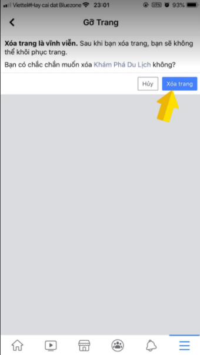
Bước 6: Sau khi bạn ấn vào nút Xóa trang, Facebook sẽ gửi đến bạn thông báo Trang của bạn đã bị xóa vĩnh viễn, bạn ấn vào Ok. Như vậy là việc xóa trang Fanpage Facebook trên điện thoại thành công rồi nhé.
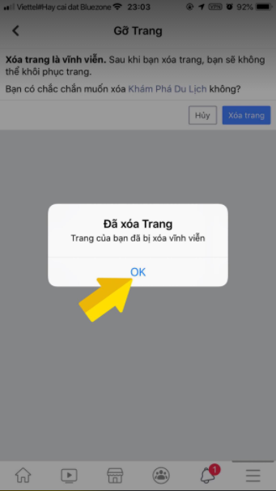
Bài viết trên đây đã hướng dẫn bạn cách xóa trang Fanpage Facebook ngay lập tức trên cả giao diện điện thoại và máy tính. Hy vọng với những thông tin chia sẻ trên hữu ích đối với bạn. Nếu bạn có bất kỳ câu hỏi gì đừng quên để lại bình luận ngay dưới đây để chúng tôi giải đáp cho bạn nhé. Chúc bạn thực hiện thành công!